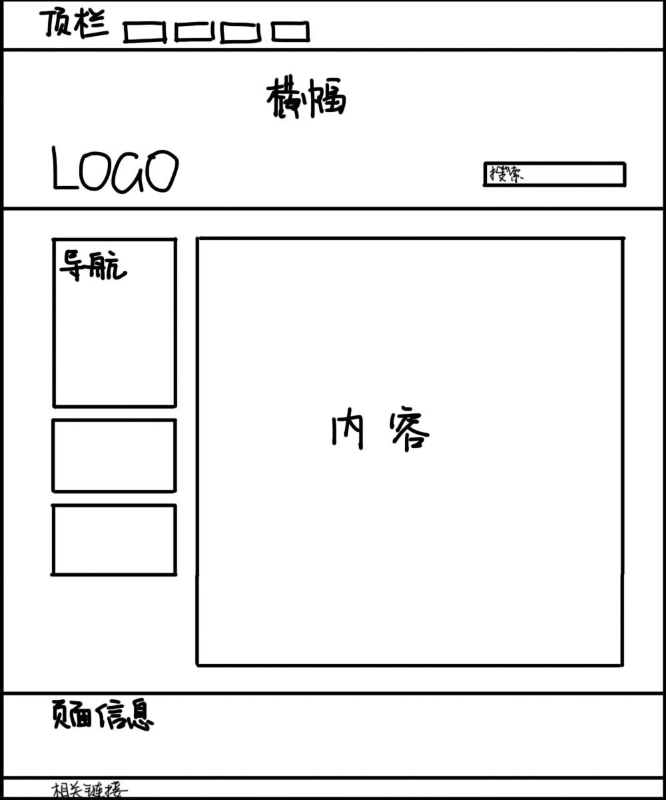
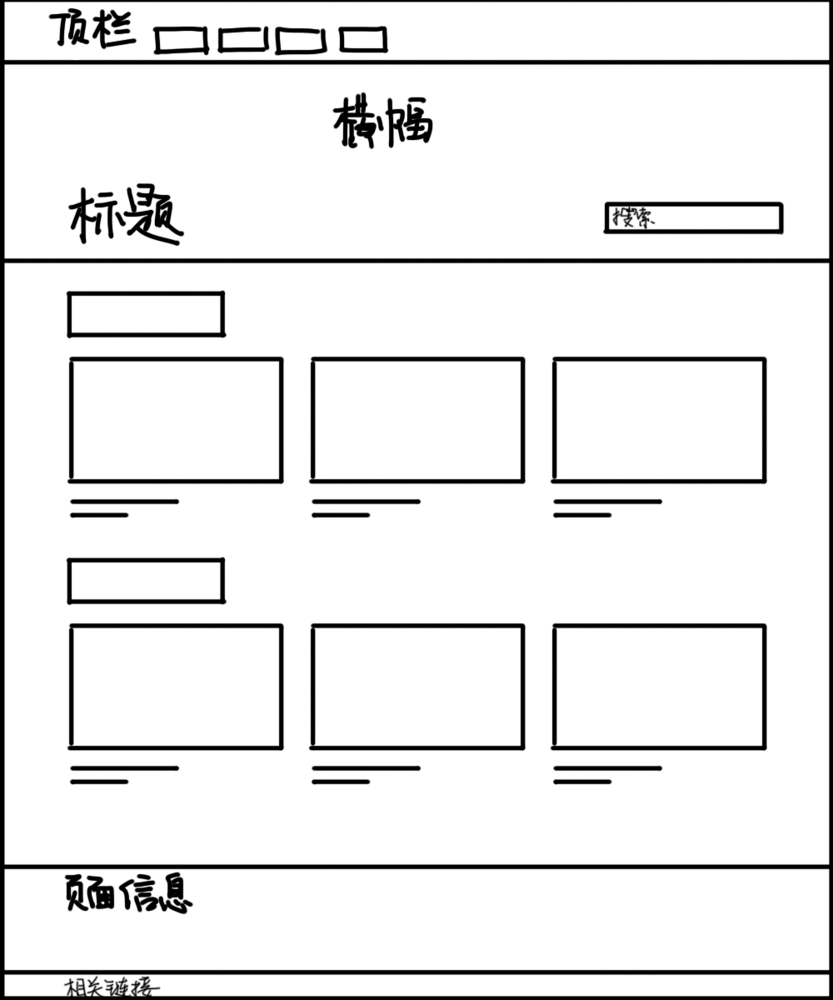
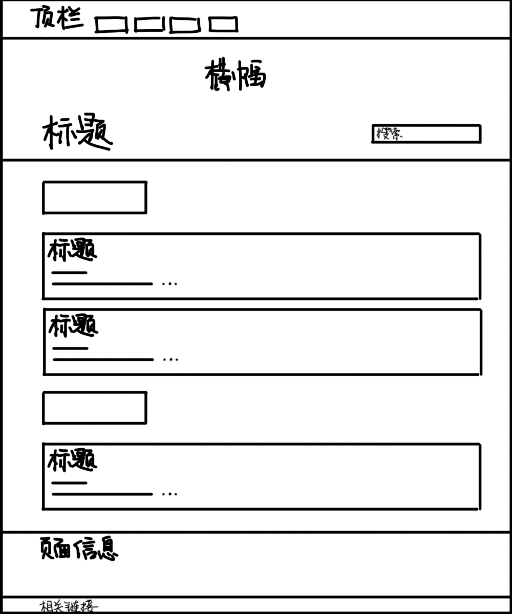
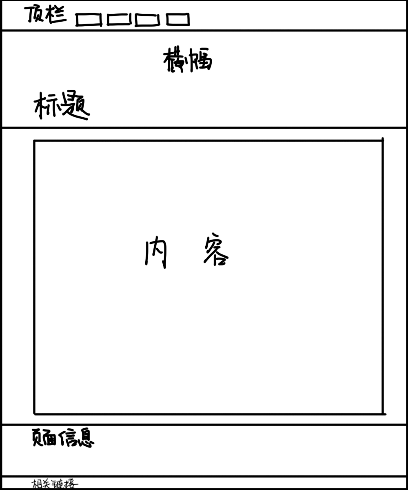

关于作业
本网页为郑州大学选修课《网页设计与网站建设》的一份作业，目前共5个栏目，7个页面(没时间做第8个页面了……)
作业中运用了课堂中的大部分知识点。但也运用了一些课堂上没讲过的知识点，如css变量(IE不支持)、transition动画过渡、@font-face加载外部字体文件等css相关知识。
代码使用Visual Studio Code编写，并用Live Server拓展进行编辑实时预览。
目前本网页为交作业用的演示网页，暂未全面完成建设，后续会逐步建设成个人网页。
本网页目前暂时不兼容已经过时的IE浏览器，如果使用IE会造成显示上的问题，请使用新版Edge、Chrome、Firefox等现代浏览器浏览，后续会增加对IE浏览器的支持。
作业在线预览地址：https://timothyou.github.io
站点目录结构
timothyou.github.io
├index.html // 主页
├index // 主页文件夹
│├pictures // 图片文件夹
││└...
│└layout.css // 专有页面布局css
│
├creation // 创作
│├index.html // 创作展示页(用index.html的原因是当在地址栏上输入timothyou.github.io/creation时即显示index.html的内容)
│├pictures // 图片文件夹
││└...
│└layout.css // 专有页面布局css
│
├notes // 笔记
│├index.html // 笔记页
│├pictures // 图片文件夹
││└...
│└layout.css // 专有页面布局css
│
├something // 事记
│├index.html // 事记汇总页
│├pictures // 图片文件夹
││└...
│└layout.css // 专有页面布局css
│
├something // 相册
│├index.html // 相册页
│├pictures // 图片文件夹
││├photography-course // 某个相册的图片文件夹
│││└...
││└...
│├photography-course.html // 某个相册的网页文件
│└layout.css // 专有页面布局css
│
├about // 关于
│├index.html // 关于信息页
│├pictures // 图片文件夹
││└...
│└layout.css // 专有页面布局css
│
└static // 静态资源文件
├fonts // 字体文件夹
├picture // 图片文件夹
├font-face.css // 引入字体用css文件
└style.css // 通用样式css文件
页面布局
主页
创作/事记/相册
笔记
内容页
建站历程
1. 立项，划分栏目
2. 确定设计风格及配色
3. 确定各个页面的布局，在纸上画页面草图
4. 写页面顶栏、横幅、底栏HTML及css代码
5. 分别完成主页、创作合集页、笔记合集页、事记合集页、相册合集页的HTML及css代码
6. 给各个页面加入图像
7. 完成一个相册页面，并放置相片
8. 完成关于页，撰写作业说明
版权相关
除自己拍摄/绘制图片外，网页中使用图片均为CC协议图片或合理引用版权图片，注释中已标明原出处。
中文字体使用思源黑体，西文字体使用FF DIN字体，使用@font-face引用，本作业暂时以非商用方式使用。
源代码
源代码地址https://github.com/TimothyOu/TimothyOu.github.io
此处展示部分重要源码
主页源码 ./index.html
<!DOCTYPE html>
<html lang="zh">
<head>
<meta charset="UTF-8">
<meta http-equiv="X-UA-Compatible" content="IE=edge">
<meta name="viewport" content="width=device-width, initial-scale=1.0">
<link rel="stylesheet" href="static/style.css">
<link rel="stylesheet" href="index/layout.css">
<title>TimothyOu</title>
</head>
<body>
<div class="header">
<div class="header-container">
<div class="logo">TimothyOu</div>
<ul class="topnav">
<li class="focus"><a href="#">主页</a></li>
<li><a href="./creation/">创作</a></li>
<li><a href="./notes/">笔记</a></li>
<li><a href="./something/">事记</a></li>
<li><a href="./photos/">相册</a></li>
<li><a href="./about/">关于</a></li>
</ul>
</div>
</div>
<div class="banner" style="background-image: url('./index/pictures/sea-turquoise-water-seaside_banner.jpg')">
<div class="banner-container">
<div class="banner-logo"></div>
<div class="search-bar">
<input class="search-bar-input" type="text" placeholder="搜索"/>
</div>
</div>
</div>
<div class="content flex">
<div class="side-content">
<div class="navbar">
<section>
<div class="navtitle">近期事记</div>
<ul>
<li>《网页设计与网站建设》课程完结</li>
<li>「建筑设计212」进入尾声</li>
<li>英语四级考试事记</li>
</ul>
</section>
<section>
<div class="navtitle">近期笔记</div>
<ul>
<li>火车票区间限售政策不透明致购票者不满</li>
<li>抵制无处不在的官僚主义现象</li>
<li>svg动画广泛应用于网页设计</li>
<li>Flash已成为历史</li>
</ul>
</section>
</div>
<a href="./something/"><div class="navbox navbox-events" style="background-image: url(./creation/pictures/TimothyOu-212.png);">
<div class="navtitle">事件</div>
<div class="navtext">建筑设计212</div>
</div></a>
<a href="./photos/photography-course.html"><div class="navbox navbox-photos" style="background-image: url(./photos/pictures/photography-course/01\ 花.jpg);">
<div class="navtitle" style="color: white;">相册</div>
<div class="navtext" style="color: white;">摄影选修课作业</div>
</div></a>
</div>
<div class="main-content">
<section>
<h2>关于我</h2>
<img style="width: 150px; height: 150px; position: absolute; right: 0;" src="./index/pictures/TimothyOu_Normal_C_x32_whitebg.png"/>
<p>你好！我是Timothy，郑州大学建筑学在读，爱好绘画和设计。</p>
<p>常用的卡通设定是一个灰色头发、蓝绿色瞳的普通青年。</p>
<p>平时喜欢听古风音乐、电子音乐和日文歌曲，喜欢看动漫。</p>
<p>常玩的游戏有 Minecraft 和 Fall Guys，对MOBA类游戏不感兴趣。</p>
</section>
<section>
<h2>大学以来的生活</h2>
<p>大学并不是轻松的。虽然与高中相比多了更多自由的时间，但从某种程度上甚至要比高中还累。</p>
<p>作为一名学建筑的画图人，设计、做模型和画图构成了大学生活的主要部分，设计周熬夜成为大多数学生的常态，再加上健康打卡、青年大学习和各种公修课作业……空闲的时间实在不多。还好我们不学大学物理，高数也只上一个学期就没了。</p>
<p>到了假期还是非常轻松的。我既不用为课程设计肝图，又无需完成并不存在的假期作业，所以有大把的时间做自己喜欢的事情。</p>
<a class="linkto" href="something/">查看更多 →</a>
</section>
<section>
<h2>关于这个网页</h2>
<p>这是一个普通的网页，但这个网页又不普通。</p>
<p>这个页面是网页设计选修课的作业，用了课程涉及到的大部分知识点，当然也运用了课程没涉及到的知识。</p>
<p>在选这门课之前我早就掌握了一些HTML和CSS基础知识，设计过几个页面，选这门课纯粹是为了兴趣。</p>
<p>代码全部使用<a href="https://code.visualstudio.com/">Visual Studio Code</a>编写。Dreamweaver？不存在的，个人感觉没VScode好用。</p>
<p>作业在线预览地址：<a href="https://timothyou.github.io">timothyou.github.io</a></p>
<p>该页面目前暂时不兼容已经过时的IE浏览器，如果使用IE会造成显示上的问题，请使用<a href="https://www.microsoft.com/zh-cn/edge">新版Edge</a>、<a href="https://www.google.cn/chrome">Chrome</a>、<a href="http://www.firefox.com.cn">Firefox</a>等现代浏览器浏览。</p>
<p>关于该作业设计的详细信息，可<a class="linkto" href="about/">查看更多 →</a></p>
</section>
</div>
</div>
<div class="bottom">
<div class="bottom-container">
<div>TimothyOu 的个人主页</div>
<div>欧子钦 202009000318</div>
<div>指导老师: 胡静</div>
</div>
<div class="bottom-info">
<div class="bottom-info-container">
<span>Email: timothyou@qq.com</span>
<span>bilibili · AcFun · Weibo</span>
</div>
</div>
</div>
</body>
</html>
通用css ./static/style.css
@import url('./font-face.css');
:root {
--main-color: #05826F;
--main-color-light:#05907B;
--main-color-dark:#11594E;
--second-color:#655A57;
--second-color-light:#8D807C;
--second-color-dark:#463E3C;
--grey-color:#808080;
--grey-light:#A0A0A0;
--grey-color-dark:#404040;
--text-black:#202020;
--text-white:#FFFFFF;
--content-margin: 50px;
--border-radius: 2px;
--content-width: calc(100% - 100px);
}
@media screen and (min-width: 1301px) {
:root {
--content-width: 1200px;
}
}
html {
width: 100%;
margin: 0;
padding: 0;
}
body {
width: 100%;
margin: 0;
padding: 0;
color: var(--text-black);
font-family: 'DIN Pro', 'Source Han Sans';
background-color: var(--background);
min-width: 800px;
}
.header {
width: 100%;
height: 50px;
background-color: var(--second-color-dark);
color: white;
}
.header-container {
position: relative;
box-sizing:border-box;
height: 100%;
margin: auto;
width: var(--content-width);
display: flex;
align-items: flex-end;
}
.logo {
width: 120px;
font-size: 20px;
font-weight: 500;
padding-bottom: 5px;
}
.topnav {
display: flex;
font-size: 16px;
padding-bottom: 4px;
}
.topnav li a{
border-bottom: 2px solid transparent;
padding: 4px 8px 3px;
color: white;
text-decoration: none;
}
.topnav li:hover a {
background-color: #FFFFFF20;
}
.topnav li.focus a {
border-bottom: 2px solid var(--second-color-light);
}
.banner {
width: 100%;
height: 300px;
background-size: cover;
background-position: center;
}
.banner-container {
position: relative;
height: 100%;
width: var(--content-width);
margin: auto;
}
.banner-logo {
position: absolute;
bottom: 15px;
left: 0;
width: 200px;
height: 100px;
background-image: url('./picture/TO-20211130.png');
background-size: cover;
background-position: center;
}
.banner-title {
position: absolute;
bottom: 15px;
left: 0;
font-size: 50px;
font-weight: 500;
}
.banner-title-normal {
position: absolute;
bottom: 15px;
left: 0;
font-size: 40px;
font-weight: 500;
}
.search-bar {
width: 250px;
height: 35px;
background-color: #FFFFFFA0;
padding: 0 5px 0;
border-radius: var(--border-radius);
backdrop-filter: blur(2px);
position: absolute;
right: 0;
bottom: 20px;
}
.search-bar-input {
width: 100%;
height: 100%;
line-height: 100%;
font-size: 16px;
background: none;
border: none;
outline: none;
padding: 0;
margin: 0;
color: var(--second-color-dark);
}
.search-bar-input::placeholder {
color: var(--second-color-light);
}
.content {
margin: 0 var(--content-margin) 0;
min-height: 500px;
max-width: var(--content-width);
margin: auto;
}
.side-content {
width: 200px;
flex-shrink: 0;
padding-top: 20px;
}
.navbar {
padding: 5px;
width: 100%;
background-color: #F0F0F0;
border-radius: var(--border-radius);
}
.navbar ul li{
padding: 3px 0;
font-size: 14px;
transition: color 0.2s ease;
}
.navbar ul li:hover{
color: var(--second-color);
}
.navbox {
overflow: hidden;
padding: 5px;
position: relative;
margin: 10px 0;
width: 100%;
height: 125px;
background-color: #F0F0F0;
border-radius: var(--border-radius);
background-size: cover;
background-position: center;
}
.navtitle{
font-weight: bold;
}
.navtext{
position: absolute;
bottom: 5px;
font-size: 14px;
}
.main-content {
padding-left: 40px;
}
.card-container {
flex-wrap: wrap;
}
.card {
width: 200px;
height: 200px;
margin: 0 20px 0;
color: var(--text-black);
}
.card img{
border-radius: var(--border-radius);
width: 100%;
height: 150px;
object-fit: cover;
}
.textcard{
border-radius: var(--border-radius);
background-color: #F0F0F0;
}
.textcard h3{
color: var(--second-color-dark);
}
.textcard p{
color: var(--second-color);
}
.bottom {
width: 100%;
height: 100px;
background-color: var(--second-color);
color: white;
font-weight: 300;
}
.bottom-container {
padding-top: 5px;
position: relative;
height: 80px;
width: var(--content-width);
margin: auto;
}
.bottom-info {
width: 100%;
height: 20px;
background-color: var(--second-color-dark);
}
.bottom-info-container {
position: relative;
height: 100%;
width: var(--content-width);
margin: auto;
display: flex;
justify-content: space-between;
}
.content a {
text-decoration: none;
color: var(--second-color);
}
.content a.linkto {
text-decoration: none;
color: var(--main-color);
transition: color 0.3s;
}
.flex {
display: flex;
}
ul {
list-style-type: none;
margin: 0;
padding: 0;
}
input {
font-family: 'DIN Pro', 'Source Han Sans';
}
section {
position: relative;
}
pre {
width: 100%;
white-space: pre-wrap;
word-wrap: break-word;
}